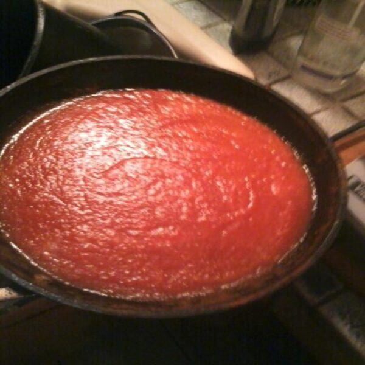

Zložky
- 1 papája
- 1 údená broskyňa Bhut Jolokia (broskyňová paprika ducha)
- 1 malá žltá cibuľa
- 1/3 šálky bieleho octu
- 1 celá olúpaná limetka
- 1 lyžica hnedého cukru
- 2 strúčiky cesnaku
- 1/2 lyžice zázvoru
- 1/8 lyžičky nového korenia
- soľ
Návod na použitie
- Vložte všetky prísady a rozmixujte ich do hladka.
- Potom priveďte do varu a 10 minút povarte.
- Na konci pridajte hnedý cukor a kôru z limetky.
- Variacu sa omáčku nalejte do 150ml woozy fliaš